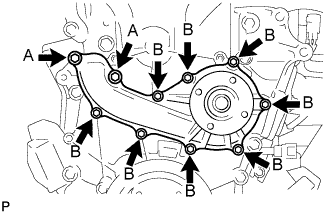
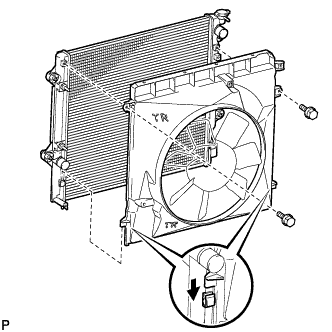
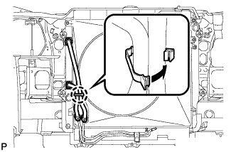

НАСОС СИСТЕМЫ ОХЛАЖДЕНИЯ > УСТАНОВКА |
| 1. УСТАНОВИТЕ НАСОС СИСТЕМЫ ОХЛАЖДЕНИЯ В СБОРЕ |
|  |
Установите новую прокладку, а затем закрепите насос системы охлаждения 10 болтами.
| 2. УСТАНОВИТЕ НАТЯЖИТЕЛЬ ПОЛИКЛИНОВОГО РЕМНЯ В СБОРЕ |
 |
Установите натяжитель ремня и временно закрепите его 3 болтами.
Установите натяжитель и закрепите его 3 болтами, затянув их в последовательности, указанной на рисунке.
| 3. УСТАНОВИТЕ ОПОРНЫЙ РОЛИК № 1 |
Установите распорную втулку и опорный ролик и закрепите их болтом.
| 4. УСТАНОВИТЕ ГЕНЕРАТОР В СБОРЕ (для моделей с номинальным током 80 A) |
Установите генератор и закрепите его 2 болтами.
Подсоедините разъем генератора.
Подсоедините провод генератора и закрепите его гайкой.
Установите заглушку контакта.
| 5. УСТАНОВИТЕ ГЕНЕРАТОР В СБОРЕ (для моделей с номинальным током 100 A) |
Установите генератор и закрепите его 3 болтами.
Подсоедините провод генератора к контакту В и закрепите его гайкой.
Установите заглушку контакта.
Подсоедините разъем генератора.
| 6. УСТАНОВИТЕ КОЖУХ ВЕНТИЛЯТОРА |
Установите шкив вентилятора на насос системы охлаждения.
Поместите кожух вместе с вентилятором вискомуфты между радиатором и двигателем.
Установите вентилятор вискомуфты на насос системы охлаждения и предварительно закрепите его 4 гайками. Затяните гайки вручную до упора.
|  |
Присоедините захваты кожуха к радиатору, как показано на рисунке.
Закрепите кожух 2 болтами.
Установите поликлиновой ремень вентилятора и генератора (Нажмите здесь).
Затяните 4 гайки вентилятора вискомуфты.
|  |
Введите в зацепление захват, чтобы сомкнуть зажим гибкого шланга, как показано на рисунке.
| 7. УСТАНОВИТЕ ВОЗДУШНЫЙ ФИЛЬТР И ШЛАНГ |
 |
Установите воздушный фильтр и шланг, совместив его метку с меткой крышки воздушного фильтра, как показано на рисунке.
| *1 | Метка |
| *a | Верх |
| *b | Передняя сторона |
Затяните хомут шланга.
Введите в зацепление 4 зажима.
Подсоедините разъем датчика массового расхода воздуха и закрепите его 3 зажимами.
| 8. УСТАНОВИТЕ РАСШИРИТЕЛЬНЫЙ БАЧОК РАДИАТОРА |
Установите расширительный бачок радиатора и закрепите его 3 болтами.
Подсоедините шланг бачка к радиатору.
| 9. ДОБАВЬТЕ ОХЛАЖДАЮЩУЮ ЖИДКОСТЬ ДВИГАТЕЛЯ |
Затяните пробку сливного крана блока цилиндров.
Затяните пробку сливного крана радиатора вручную.
Отсоедините 2 виниловых шланга.
Долейте охлаждающую жидкость.
| Параметр / Устройство | Заданные условия | |
| для моделей с автоматической трансмиссией | Для моделей без заднего подогревателя | 8,1 литра (8,6 кварты США, 7,1 английской кварты) |
| Для моделей с задним подогревателем | 9,9 литра (10,5 кварты США, 8,7 английской кварты) | |
| для моделей с механической трансмиссией | Для моделей без заднего подогревателя | 8,3 литра (8,8 кварты США, 7,3 английской кварты) |
| Для моделей с задним подогревателем | 10,1 литра (10,7 кварты США, 8,9 английской кварты) | |
Медленно налейте охлаждающую жидкость в расширительный бачок радиатора до отметки "F".
Установите пробку расширительного бачка.
Установите на место пробку радиатора.*1
Запустите двигатель и сразу же остановите его.*2
Подождите примерно 10 с. Затем снимите пробку радиатора и проверьте уровень охлаждающей жидкости. Если уровень охлаждающей жидкости снизился, добавьте охлаждающую жидкость.*3
Повторяйте шаги *1, *2 и *3 до тех пор, пока уровень охлаждающей жидкости не снизится.
Установите на место пробку радиатора.*4
Настройте систему кондиционирования, как описано ниже.*5
| Параметр / Устройство | Условие |
| Скорость вентилятора | Любая настройка, кроме OFF (ВЫКЛ) |
| Температура | В сторону "WARM" |
| Переключатель системы кондиционирования | Выкл |
Запустите двигатель, прогрейте его настолько, чтобы открылся термостат, а затем дайте поработать в таком состоянии несколько минут, чтобы прокачать охлаждающую жидкость.*6
Остановите двигатель и подождите, пока охлаждающая жидкость не охладиться до температуры окружающего воздуха. Затем снимите пробку радиатора и проверьте уровень охлаждающей жидкости.*7
Если уровень охлаждающей жидкости снизился, добавьте охлаждающую жидкость и прогрейте двигатель до открывания термостата.*8
Если уровень охлаждающей жидкости не снизился, убедитесь, что уровень жидкости в расширительном бачке радиаторе находится на линии F.
Если уровень охлаждающей жидкости ниже линии F, повторите шаги с *4 по *8.
Если уровень охлаждающей жидкости выше линии F, слейте охлаждающую жидкость до линии F.
| 10. ПРОВЕРЬТЕ, НЕТ ЛИ УТЕЧЕК ОХЛАЖДАЮЩЕЙ ЖИДКОСТИ |
Заполните радиатор охлаждающей жидкостью и подсоедините приспособление для опрессовки системы охлаждения и проверки пробки радиатора.
Прогрейте двигатель.
С помощью приспособления для опрессовки системы охлаждения и проверки пробки радиатора увеличьте давление в радиаторе до 123 кПа (1,3 кгс/см2, 18 фунтов на кв. дюйм) и убедитесь, что давление не падает.
Если давление снижается, проверьте на наличие утечек шланг, радиатор и насос системы охлаждения. При отсутствии внешних утечек проверьте сердцевину отопителя, блок цилиндров и головку блока цилиндров.
| 11. УСТАНОВИТЕ ЗАЩИТУ КАРТЕРА ДВИГАТЕЛЯ № 1 В СБОРЕ |
 |
Присоедините защиту картера двигателя к кузову автомобиля, как показано на рисунке.
Вверните 4 болта.
| 12. УСТАНОВИТЕ НИЖНЮЮ НАКЛАДКУ ПЕРЕДНЕГО БАМПЕРА |
Установите нижнюю облицовку переднего бампера и закрепите ее 5 болтами и фиксатором.
| 13. УСТАНОВИТЕ ВЕРХНЕЕ УПЛОТНЕНИЕ КРОНШТЕЙНА РАДИАТОРА |
Установите верхнее уплотнение кронштейна радиатора и закрепите его 13 фиксаторами.